Bodleian Library, MS Laud Misc. 656 ()
Passus
One
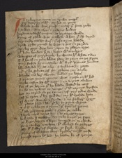In tyberyus tyme ؛ þe trewe emperour
sire sesar hymsulf ؛ seysed in rome
whyle pylat was prouost ؛ vndere þat prince riche
4 (HL 4)& Iewen iustice also ؛ in Iudeus londis
herodes vndere his emperie ؛ as heritage wolde
kyng of galile was ycalled ؛ whan þat crist deyed
þey sesar sakles were ؛ þat oft synne hatide
8 (HL 8)þrow pylat pyned he was ؛ & put on þe rode
a pyler pyӡt was doun ؛ vpon þe playn erþe
his body bonden þerto ؛ beten with scourgis
whyppes of quyrboyle ؛ bywente his white sides
12 (HL 12)Til he al on rede blode ran ؛ as rayn on þe strete
suþ stoked hym on a stole ؛ with styf Mannes hondis
blyndfelled hym as a be ؛ & boffetis hym raӡte
Ӡif þou be prophete of pris ؛ prophecie þey sayde
16 (HL 16)whiche man here aboute ؛ bolled þe laste
a þrange þornen croune ؛ was þraste on his hed
vmbecasten hym with a cry ؛ & on a croys slowen
for al þe harme þat he hadde ؛ hasted he noӡt
20 (HL 20)On hem þe vyleny to venge ؛ þat his veynys brosten
bot ay taried on þe tyme ؛ ӡif þey tourne wolde
Ӡaf hem space þat hym spilide ؛ þey hit spedde lyte
Xl wynter was as y fynde ؛ & no fewere ӡyrys
24 (HL 24)our princes presed in hem ؛ þat hym to pyne wroӡt
Til hit tydde on a tyme ؛ þat tytus of rome
þat alle gascoyne gaten ؛ & gyan þe noble
whyle noye noyet hym ؛ into neroes tyme
28 (HL 30)he hadde a malady ؛ vnmeke amyd þe face
þe lyppe lyþ on a lumpe ؛ lyuered on þe cheke
so a canker vnclene ؛ hit cloched togedres
also his fadere of flesche ؛ is ferly bytide
32 (HL 34)abikerea bikere of waspen bees ؛ bredde on his nose
hyued vpon his hed ؛ he hadde hem of ӡouþe
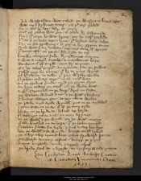and waspasian was caled ؛ þe waspene bees after
was neuer syknes sorere ؛ þan þis sire þoled
36 (HL 38)for in a liter he lay ؛ laser at rome
Out of galace was gon ؛ to glade hym a stounde
for in þat cuþe he was kyng ؛ þey he care þolede
Nas þer no leche vpon lyue ؛ þis lordes couþ helpe
40 (HL 42)Ne no grace growyng ؛ to gayne here grym sores
Now was þer on nothan ؛ neymes sone of grecys
þat souӡt oft ouer þe se ؛ fram cyte to oþer
knewe contreys fele ؛ kyngdomes manye
44 (HL 48)& was a marener myche ؛ & marchaunt boþe
sensteus out of surye ؛ sent hym to rome
To þe athel emperour ؛ an eraunde fram þe Iewes
Caled nero by name ؛ þat hym to noye wroӡt
48 (HL 52)Of his tribute to telle ؛ þat þey withtake wolde
Nathan toward nero ؛ nome on his way
Ouer þe grekys grounde ؛ myd þe grym yþes
an heye setteþ þe sayl ؛ ouer þe wode water
52 (HL 56)& with a dromound on þe deep ؛ drof on faste
þe wolcom wanned anon ؛ & þe water skeweþ
Cloudes clateren gon ؛ as þey cleue wolde
þe racke myd a rede wynde ؛ roos on þe myddel
56 (HL 60)& sone sette on þe se ؛ out of þe souþ syde
blewe on þe brode se ؛ bolned vp harde
Nathannys naue anon ؛ on norþ dryueþ
so þe wedour & þe wynd ؛ on þe water metyn
60 (HL 64)þat alle hurtled on an hepe ؛ þat þe helm ӡemyd
Nathan flatte for ferde ؛ & ful vnder hacchys
lete þe wedour & þe wynde ؛ worþe as hit lyked
þe schip scher vpon schore ؛ schot froward rome
64 (HL 68)Toward vncouþ costes ؛ keuereþ þe yþes
Rapis vnradly ؛ vmbe ragged tourres
þe brode sail at o brayd ؛ tobresteþ atwynne
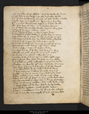þat on ende of þe sschip ؛ was ay toward heuen
68 (HL 72)þat oþer doun in þe deep ؛ as alle drenche wolde
Ouer wilde wawes he wende ؛ as alle walte scholde
stroke stremes þrow yn ؛ stormes & wyndes
with mychel langour atte laste ؛ as our lord wolde
72 (HL 76)alle was born at a by ؛ to burdewes hauene
by þat were bernes atte banke ؛ barouns & knyӡtes
& suþ of þe syӡt ؛ selcouþ þoӡt
þat euer barge oþer bot ؛ or berne vpon lyue
76 (HL 80)vnpersched passed hadde ؛ þe peryles were so many
þey token hym to titus ؛ for he þe tonge couþe
& he fraynes how fer ؛ þe flode hadde yferked
sire out of surre ؛ he seide y am come
80 (HL 84)To nero sondisman ؛ sent þe senatour of rome
Fram sensteus his seriant ؛ with certayn leteres
þat is iustise & iuge ؛ of Iewen lawe
Me were leuer at þat londe ؛ lord leue þat y were
84 (HL 88)þan alle þe gold oþer good ؛ þat euer god made
þe kyng into conseyl ؛ calleþ hym sone
& saide canste þou any cure ؛ or craft vpon erþe
To softe þe grete sore ؛ þat sitteþ on my cheke
88 (HL 92)& y schal þe redly rewarde ؛ & to rome sende
Nathan nyckes hym with nay ؛ sayde he non couþe
bot were þou kyng in þat kuþþe ؛ þer þat crist deyed
þer is a worldlich wif ؛ a womman ful clene
92 (HL 96)þat haþ softyng & salue ؛ for eche sore out
Telle me tyt quod titus ؛ & þe schal tyde better
what medecyn is most ؛ þat þat may vseþ
wheþer gommes oþer graces ؛ or any goode drenches
96 (HL 100)Oþer chauntementes or charmes ؛ y charge þe to say
Nay non of þo quod nathan ؛ bot now wole y sey
þer was a lede in our londe ؛ while he lif hadde
preued for a prophete ؛ þrow preysed dedes
100 (HL 104)& born in bethleem ؛ one by of a burde schene
& ӡo a mayde vnmarred ؛ þat neuer man touched
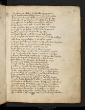as clene as clef ؛ þer cristalle sprynges
without hosebondes helpe ؛ saue þe holy goste
104 (HL 108)a kyng & a knaue child ؛ ӡo conceyued at ere
a touche of þe trinyte ؛ touched hire hadde
þre persones in o place ؛ preued togedres
Eche grayn is o god ؛ & o god bot alle
108 (HL 112)& alle þre ben bot one ؛ as eldres vs tellen
þe first is þe fadere ؛ þat fourmed was neuer
þe secunde is þe sone ؛ of his sede growyn
þe þridde in heuen myd hem ؛ is þe holy goste
112 (HL 116)Neþer merked ne made ؛ bot mene fram hem passyþ
alle ben þey endeles ؛ & euer of o myӡt
& weren endeles euer ؛ byfor þe world was bygonne
as sone was þe sone ؛ as þe self fadere
116 (HL 120)þe holy goste with hem ؛ hadde þey euer
þe secunde persone þe sone ؛ sent was to erþe
To take careynes kynde ؛ of a clene mayde
& so vnknowen he came ؛ caytifes to helpe
120 (HL 124)& wroӡt wondres ynowe ay ؛ tille he wo driede
wyne he wroӡt of water ؛ at o word ene
Ten lasares at a logge ؛ he leched at enys
pyned myd piles ؛ he putte to hele
124 (HL 128)& ded men fro þe deþ ؛ eche day rered
Croked & cancred ؛ he keuered hem alle
boþ þe dombe & þe deue ؛ myd his dere wordes
Dide myracles many mo ؛ þan y in mynde haue
128 (HL 132)Nis no clerk with countours ؛ couþe aluendel rekene
fyf þousand of folke ؛ is ferre to here
with two fisches he fedde ؛ & fif bere loues
þat eche freke hadde his fulle ؛ & ӡit ferre leued
132 (HL 136)Of brede & of broken mete ؛ bascketes twelue
þer suwed hym out of an cite ؛ sixty & twey
To do what he dempte ؛ disciples were hoten
hem to citees he sende ؛ his sawes to preche
136 (HL 140)ay by two & by two ؛ til hy were atwynne
hym suwed out of anoþer cite ؛ semeliche twelue
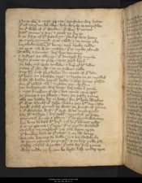Pore men & noӡt prute ؛ aposteles were hoten
þat of
caytifes
he ches ؛ holy churche to encresche
140 (HL 144)þe outwale of þis worlde ؛ þis were her names
peter Iames & Ion ؛ & Iacob þe ferþe
& þe fifþe of his felawys ؛ phelip was hoten
þe sixte symond was caled ؛ & þe seueþ eke
144 (HL 148)bertholomewe þat his bone ؛ neuer breke nolde
þe eyӡt man was mathu ؛ þat is myche yloued
Tadde & tomas ؛ here ben ten euen
& andreu þe elleueþ ؛ þat auntred hym myche
148 (HL 152)byfor princes to preche ؛ was petrus broþer
þe laste man was vnlele ؛ & luþer of his dedis
Iudas þat crist ؛ to þe Iewes solde
suþ hymsulf he slowe ؛ for sorow of þat dede
152 (HL 156)his body on a balwe tree ؛ to-breste on þe myddel
whan crist hadde heried helle ؛ & was heuen passed
for þat mansed man ؛ mathie þey chossyn
Ӡit vnbaptiӡed were boþe ؛ barnabe & poule
156 (HL 160)& noӡt knewen of crist ؛ bot comen sone after
þe princes & þe prelates ؛ aӡen þe paske tyme
alle þei hadde hym in hate ؛ for his holy werkes
hit was a doylful dede ؛ whan þey his deþ caste
160 (HL 164)þrow pilat pyned he was ؛ þe prouost of rome
& þat worliche wif ؛ þat arst was ynempned
haþ his visage in hire veil ؛ veronyk ӡo hatte
peynted priuely & playn ؛ þat no poynt wanteþ
164 (HL 168)for loue he left hit hire ؛ til hire lyues ende
þer is no gome in þis erþe ؛ þat is grym wounded
Meselry ne meschef ؛ ne man vpon erþe
þat kneleþ doun to þat cloþ ؛ & on crist leueþ
168 (HL 172)bot alle hapneþ to helle ؛ in & handwhyle
at rome reyned þe emperour ؛ quod þe kyng riche þan
Cesar synful wrecche ؛ þat sent hym fram rome
why nadde þy lycam be leyd ؛ low vnder erþe
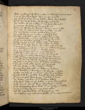 172 (HL 176)whan pilat prouost was made ؛ suche a prince to Iugge
& or þis wordes were ؛ wonne to þe ende
þe cankere þat þe kyng hadde ؛ clenly was heled
without faute þe face ؛ of flesche & of hyde
176 (HL 180)as newe as þe nebbe ؛ þat neuer was wemmyd
a corteys crist ؛ seide þe kyng riche þan
was neuer worke þat y wroӡt ؛ worþy þe to telle
Ne dede þat y haue don ؛ bot þy deþ mened
180 (HL 184)Ne neuer sey þe in siӡt ؛ goddis sone dere
bot now bayne me my bone ؛ blessed lord
To stire nero with noye ؛ & newen his sorowe
& y schal buske me boun ؛ hem bale to wyrche
184 (HL 188)To do þe deueles of dawe ؛ & þy deþ venge
Telle me tit quod titus ؛ what tokne he lafte
To hem þat knew hym for crist ؛ & his crafte leued
Nempne þe trinyte by name ؛ quod nathan at þries
188 (HL 192)& þer myd baptemed be ؛ in blessed water
forþ þey fetten a font ؛ & foulled hym þer
Made hym cristen kyng ؛ þat for crist werred
Corrours into eche coste ؛ þan þe cours nomen
192 (HL 196)& alle his baronage broӡt ؛ to burdewes hauen
suþ with þe sondesman ؛ he þouӡt to rome
þe ferly & þe faire cure ؛ his fadere to schewe
& he gronnand glad ؛ grete god þanked
196 (HL 200)& loude criande on crist ؛ carped & saide
worþy wemlese god ؛ in whom y byleue
& þou in bethleem was born ؛ of a bryӡt mayde
sende me hele of my hurt ؛ & heyly y afowe
200 (HL 204)To be ded for þy deþ ؛ bot hit be dere ӡolden
þat tyme peter was pope ؛ & preched in rome
þe lawe & þe lore ؛ þat our byleue askeþ
folowed faste on þe folke ؛ & to þe fayþ tourned
204 (HL 208)& crist wroӡt for þat wye ؛ wondres ynow
þerof waspasian was ware ؛ þat þe waspys hadde
sone sendeþ hym to ؛ & þe soþe tolde
Of crist & þe kerchef ؛ þat keuered þe sike
208 (HL 212)as nathan neymes sone seide ؛ þat to nero was come
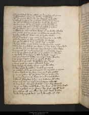þan to consayl was called ؛ þe knyӡtes of rome
& assenteden sone ؛ to sende messageres
XXti knyӡtes were cud ؛ þe clergyf to fecche
212 (HL 216)& asked trewes of þe emperour ؛ þat erand to done
ac without tribute or trewes ؛ tenfulle wyes
þe knyӡtes with þe kerchef ؛ comen ful blyue
þe pope ӡaf pardoun to hem ؛ þat passed þer aӡens
216 (HL 220)with processioun & pres ؛ princes & dukes
& whan þe womman was ware ؛ þat þe wede owede
To seint peter þe pope ؛ ӡo platte to þe grounde
vmbefelde his fete ؛ & to þe freke saide
220 (HL 224)Of þis kerchef & my cors ؛ þe kepyng y þe take
þan bygan þe burne ؛ biterly to wepe
for þe doylful deþ ؛ of his dere mayster
& longe stode in þe stede ؛ or he stynte myӡt
224 (HL 228)whan he vnclosed þe cloþe ؛ þat cristes body touched
þe wede fram þe womman ؛ þey warpen atte laste
Receyued hit myd reuerence ؛ & rennande teris
Out of þe place myd pres ؛ þey passed on swyþe
228 (HL 232)& ay held hit on hey ؛ þat alle byhold myӡt
þan xij barouns bolde ؛ þe emperour bade wende
& þe pope departe ؛ fram þe pople faste
veronyk & þe vail ؛ waspasian þey broӡt
232 (HL 236)& seint peter þe pope ؛ presented boþe
bot a ferly byfelle ؛ forþ myd hem alle
In here temple bytidde ؛ tenful þynges
þe mahound & þe mametes ؛ tomortled to peces
236 (HL 240)& al tocrased as þe cloþ ؛ þroӡ þe kirke passed
Into þe palice with þe prente ؛ þan þe pope ӡede
knyӡtes kepten þe cloþe ؛ & on knees fallen
a flauour flambeþ þerfro ؛ þey felleden hit alle
240 (HL 244)was neuer odour ne eyre ؛ vpon erþe swetter
þe kerchef clansed hitself ؛ & so clere wexed
Myӡt no lede on hit loke ؛ for liӡt þat hit schewed
as hit aproched to þe prince ؛ he put vp his hed
244 (HL 248)for comfort of þe cloþ ؛ he cried wel loude
lo lordlynges here ؛ þe lyknesse of crist
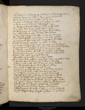Of whom my botnyng ybidde ؛ for his bitter woundis
þan was wepyng & wo ؛ & wryngyng of hondis
248 (HL 252)with loude dyn & dit ؛ for doil of hym one
þe pope availed þe vaile ؛ & his visage touched
þe body suþ al aboute ؛ blessed hit þrye
þe waspys wenten away ؛ & alle þe wo after
252 (HL 256)þat er lasar was longe ؛ lyӡtter was neuere
þan was pypyng & play ؛ his pyne was awey
þey ӡelden grace to god ؛ þis two grete lordes
þe kerchef carieþ fram alle ؛ & in þe eyr hangyþ
256 (HL 260)þat þe symple pople myӡt hit se ؛ into soper tyme
þe veronycle after veronyk ؛ waspasian hit called
Garde hit gayly agysen ؛ in gold & in seluere
Ӡit is þe visage in þe vail ؛ as veronyk hym broӡt
260 (HL 264)þe romaynes hit holdeþ at rome ؛ & for a relyk hit holden
þis whyle nero hadde noye ؛ & non nyӡtes reste
for his tribute was withhold ؛ as nathan told hadde
he commaundiþ knyӡtes to come ؛ consail to holde
264 (HL 268)Erles & alle men ؛ þe emperour aboute
assembled þe senatours ؛ sone vpon haste
To iugge who iewes myӡt best ؛ vpon þe Iewys take
& alle demeden by dome ؛ þo dukes to wende
268 (HL 272)þat were cured þrow crist ؛ þat þey on croys slowen
þat on waspasian was ؛ of þe wyes twey
þat þe trauail vndertoke ؛ & titus anoþer
a bold burne on a blonke ؛ & of his body comyn
272 (HL 276)No ferþer sib to hymself ؛ bot his sone dere
Crouned kynges boþe ؛ & mychel crist loued
þat hadde hem ӡeuen of his grace ؛ & here grem stroyed
Moste þei hadde hit in hert ؛ here hestes to kepe
276 (HL 280)& here forwardis to fulfille ؛ þat þei byfor made
þan was rotlyng in rome ؛ robbyng of brynnyis
schewyng of scharpe ؛ scheldes ydressed
lauӡte leue at þat lord ؛ leften his sygne
280 (HL 284)a grete dragoun of gold ؛ & alle þe kyng folwed
by þat schippis were schred ؛ yschot on þe depe
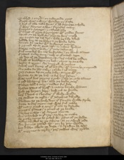Takled & atired ؛ on talterande yþes
Fresch water & wyn ؛ wounden yn faste
284 (HL 288)& stof of alle maner store ؛ þat hem strengþe scholde
þer were floynes aflot ؛ farcostes many
Cogges & crayers ؛ ycasteled alle
Galees of grete streyngþe ؛ with golden fanes
288 (HL 292)sprad on þe brod se ؛ aboute foure myle
þey tyӡten vp tal sail ؛ whan þe tide asked
hadde byr at þe bake ؛ & þe bonke lefte
souӡte ouer þe se ؛ with soudeours manye
292 (HL 296)& ryued vp at port Iaf ؛ in Iudeis londys
suree cesaris londe ؛ þou may seken euer
ful mychel wo men bewroӡte ؛ in þy blonk tounnes
Cytees vnder sene ؛ now is ӡour sorow vppe
296 (HL 300)þe deþ of þe dereworþ crist ؛ dere schal be ӡolden
Now is bethleem þy bost ؛ ybroӡt to an ende
Ierusalem & ierico ؛ forIuggyd wrecchys
schal neuer kyng of ӡour kynde ؛ with croune be ynoyntid
300 (HL 304)Ne Iewe for ihcIesu sake ؛ ronke in ӡour more
þey setten vpon eche side ؛ surrie withyn
brente ay at þe bak ؛ & ful bare lasten
was noӡt bot roryng & rich ؛ in alle þe riche tounnes
304 (HL 308)& red laschyng lye ؛ alle þe londe ouere
Token toun & toure ؛ teldes ful fele
brosten ӡates of brass ؛ & many borwe wonnen
holy þe heþen here ؛ hewyn to grounde
308 (HL 312)boþ in bent & in borwe ؛ þat abide wolde
þe Iewes to ierusalem ؛ þat Iosophus dwelde
flowen as þe foule doþ ؛ þat faucoun wolde strike
a cite vndere syon ؛ sett was ful noble
312 (HL 316)with many toret & toure ؛ þat toun to defende
princes & prelates ؛ & poreil of þe londe
Clerkes & comens ؛ of contrees aboute
were schacked to þat cite ؛ sacrifice to make
316 (HL 320)at paske tyme as preched hem ؛ prestes of þe lawe
Many swykel at þe sweng ؛ to þe swerd ӡede
for penyes passed non ؛ þoӡ he pay wolde
bot diden alle to þe deþe ؛ & drowen hem after
320 (HL 324)with engynes to ierusalem ؛ þere Iewes were þykke
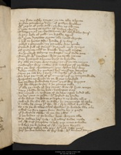þey sette sadly a sege ؛ þe cite alle aboute
piӡten pauelouns doun ؛ of pallen webbes
with ropis of riche silk ؛ raysen vp swyþe
324 (HL 328)Grete tentis as a toun ؛ of torken cloþys
Thoppyn ouer þe cheuentayns ؛ with charboklis foure
a gay egle of gold ؛ on a gilde appul
with grete dragouns grym ؛ alle in gold wroӡte
328 (HL 332)& lyk to lyouns also ؛ lyande þervndere
paled & paynted ؛ þe paueloun was vmbe
stoked ful of storijs ؛ strayned myd armys
Of quaynte colour to know ؛ kerneld alofte
332 (HL 336)an hundred stondyng on stage ؛ in þat stede one
Toured with torettes ؛ was þe tente þanne
suþ britaged aboute ؛ briӡt to byholde
Er alle þe sege was sette ؛ ӡit of þe cite comyn
336 (HL 340)Messengeres were made ؛ fram maistres of þe lawe
To þe chef cheuentayn ؛ þey chosen here wey
deden mekly by mouþe ؛ here message attonys
sayen þe cite haþ ӡou sent ؛ to serche ӡour wille
340 (HL 344)To here þe cause of ӡour comyng ؛ ӡif ӡe coueyte wolde
waspasian no word ؛ to þe wyes schewed
bot sendeþ sondismen aӡen ؛ xij sikere knyӡtes
Ӡaf hem charge to go ؛ & þe gomes telle
344 (HL 348)þat alle þe cause of her coms ؛ was crist forto venge
sayþ y bidde hem be boun ؛ bischopes & oþer
Tomorow or vndren of þe day ؛ open heded alle
vp here ӡates to ӡelde ؛ with ӡerdes an hande
348 (HL 352)Eche whiӡt in a white scherte ؛ & no wede ellys
Iewyse for crist to take ؛ by Iuggement to take
& make hem come þat crist ؛ þroӡ conseil bytrayede
Or y to þe walles schal wende ؛ & walten alle ouere
352 (HL 356)schal no ston vpon ston ؛ stonde by y passe
þis sondismen sadly ؛ to þe cite ӡede
þer þe lordes of þe londe ؛ lent weren alle
Tit tolden here tale ؛ & wondere towe made
356 (HL 360)Of crist & of Cayphas ؛ & how þey come scholde
& when þe knyӡtes of crist ؛ carpyn bygonn
þe Iewes token alle xij ؛ withoute tale more
here hondis bounden at here bak ؛ with borden stauys
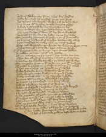 360 (HL 364)and of flocken here face ؛ & here faire berdis
Made hem naked as a nedel ؛ to þe neþer houe
here visages blecken with bleche ؛ & al þe body after
suþ knyt with a corde ؛ to eche knyӡtes swere
364 (HL 368)a chese & charged hem ؛ here chyuentayn to bere
sayþ vnbuxum we beþ ؛ his biddyng to ӡete
Ne noӡt dreden his dom ؛ his deþ haue we atled
he schal vs fynde in þe felde ؛ ne no ferre seke
368 (HL 372)Tomorowe pryme or hit passe ؛ & so ӡour prince telliþ
þe burnes busken out of burwe ؛ bounden alle twelf
aӡen message to make ؛ fram þe maister Iewes
was neuer waspasian so wroþe ؛ as whan þe wyes come
372 (HL 376)þat were scorned & schende ؛ vpon schame wyse
þis knyӡtes byfor þe kyng ؛ vpon knees fallen
& tolden þe tale ؛ as hit tid hadde
Of þy manace ne þy myӡt ؛ þey make bot lyte
376 (HL 380)þus ben we tourned of oure tyre ؛ in tokne of þe soþe
& bounden for our bolde speche ؛ þe batail þey willeþ
Toselfmorowe prime or hit passe ؛ þey put hit no ferre
hit schal be satled on þy-selfself ؛ þe same þat þou atlest
380 (HL 384)þus han þey certifiet þe ؛ & sende þe þis cheses
wode wedande wroþ ؛ waspasian was þanne
layde wecche to þe walle ؛ & warned in haste
þat alle maner of men ؛ in þe morowe scholde
384 (HL 388)be sone after þe sonne ؛ assembled in þe felde
he streӡt vp a standard ؛ in a stoure wyse
bild as a belfray ؛ bretful of wepne
whan oӡt fauted in þe folke ؛ þat to þe feld longed
388 (HL 392)atte þe belfray to be ؛ botnyng to fynde
a dragoun was dressed ؛ drawyn a-lofte
wyde gapande of gold ؛ gomes to swelwe
with arwes armed in þe mouþe ؛ & also he hadde
392 (HL 396)a fauchyn vnder his feet ؛ with foure kene bladdys
þerof þe poyntes were piӡt ؛ in partyis foure
Of þis wlonfulle worde ؛ þer þei werre fondyn
In forbesyn to þe folke ؛ þis fauchouns hengeþ
396 (HL 400)þat þey hadde wonnen with swerd ؛ al þe world riche
a bal of brennande gold ؛ þe beste was on sette
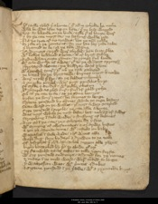his taille trayled þer aboute ؛ þat tourne scholde he neuere
whan he was liste vpon lofte ؛ þer þe lord werred
400 (HL 404)bot ay lokande on þe londe ؛ tille þat al lauӡte were
þerby þe cite myӡt se ؛ no setlyng wolde rise
Ne no trete of no trewes ؛ bot þe toun ӡelde
Or ride on þe romayns ؛ for þey han her rede take
404 (HL 408)þer britned to be ؛ or þe toun wynne
his wynges sprad were abrode ؛ boun forto flee
with belles bordored aboute ؛ al of briӡt seluere
Redy whan ouӡte runnen ؛ to rynge ful loude
408 (HL 412)with eche wynde of a wap ؛ þat to þe wynges sprongyn
Ibrytaged aboute ؛ þe belfray was þanne
with a tenful toure ؛ þat ouer þe toun gawged
þe batail by þe briӡtnesse ؛ burnes myӡt knowe
412 (HL 416)foure myle þerfro ؛ so þe feldes schonen
& on eche pomel ؛ were pyӡt penseles hyӡe
Of selke & sendel ؛ with seluere ybetyn
hit glitered as gled fure ؛ ful of gold riche
416 (HL 420)Ouer al þe cite to se ؛ as þe sonne bemys
byfor þe foure ӡates ؛ he formes to lenge
sixtene þousand by somme ؛ while þe sege lasteþ
sette ward on þe walles ؛ þat noӡt awey scaped
420 (HL 424)sixe þousand in sercle ؛ þe cite alle aboute
was noӡt while þe nyӡt laste ؛ bot nehyng of stedis
strogelyng in stele wede ؛ & stuffyng of helmes
Riӡt so in þe cite ؛ þey schapte hem þerfore
424 (HL 427)with armyng of olyfauntes ؛ & oþer arwe bestes
aӡen þe cristen to come ؛ with castels on bake
waspasial in stele wede ؛ & his wyes alle
weren diӡt forþ by day ؛ & drowen to þe vale
428 (HL 431)Of Iosophat þer ihuiesu crist ؛ schal Iuggen alle þinges
bigly batayled hym þer ؛ to abide þis oþer
þe fanward titus toke ؛ to telle vpon ferste
with six þousand soudiours ؛ assyned for þe nones
432 (HL 435)& mony in þe mydward ؛ were merked to lenge
þer waspasian was ؛ with princes & dukes
& sixtene þousand in þe þridde ؛ with a þryuande knyӡt
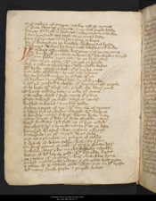sire sabyn of surrie ؛ a siker man of armes
436 (HL 439)þat prince was of prouynce ؛ & mychel peple ladde
fourty hundred in helmes ؛ & harnays to schewe
& ten þousand atte tail ؛ at þe tentis lafte
hors & harnays ؛ fram harmyng to kepe
440 (HL 443)by þat bemys on þe burwe ؛ blowen ful loude
& baners beden hem forþ ؛ now blesse vs our lorde
Passus
Two
ÞE Iewes assembled were sone ؛ & of þe cite come
an hundred þousand on hors ؛ with hamberkes atired
444 (HL 447)with out folke vpon fot ؛ at þe foure ӡates
þat preset to þe place ؛ with pauyes on hande
fyf & twenti olyfauntes ؛ defensable bestes
with brode castels on bak ؛ out of burwe come
448 (HL 451)& on eche olyfaunte ؛ armed men manye
ay an hundred an hey ؛ an hundred withyn
þo drowen dromedarius doun ؛ deuelich þicke
& hunndred þousand & yheled ؛ with harnays of mayle
452 (HL 455)Eche beste with a big tour ؛ þer bold men were ynne
Twenty told by tale ؛ in eche tour euene
Cameles closed in stele ؛ comen out þanne
Faste toward þe feld ؛ a ferlich nonbre
456 (HL 459)busked to batail ؛ & on bak hadde
Echon a toret of tre ؛ with ten men of armes
Chares ful of chosen ؛ charged with wepne
a wondere nonbre þer was ؛ whoso wite lyste
460 (HL 463)Many douӡti þat day ؛ þat was adradde neuere
were fond fey in þe feld ؛ er þat fiӡt endid
an olyfaunt yarmed ؛ came out at þe laste
keuered myd a castel ؛ was craftily ywroӡt
464 (HL 467)a tabernacle in þe tour ؛ atyred was riche
piӡt as a paueloun ؛ on pileres of seluere
a which of white seluere ؛ walynde þerynne
On foure goions of gold ؛ þat hit fram grounde bare
468 (HL 471)a closen chayre þerby ؛ on charbokeles twelfe
betyn al with barne gold ؛ with brennande sergis
þe chekes of þe chayre ؛ were chabokles fyne
Couered myd a riche cloþe ؛ þer cayphas was sette
472 (HL 475)a plate of pulsched gold ؛ was piӡt on his breste
with many preciose perle ؛ & pured stones
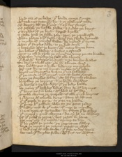lered men of þe lawe ؛ þat loude couþe synge
with sawters seten hym by ؛ & þe psalmys tolde
476 (HL 479)Of douӡty david þe kyng ؛ & oþer dere storijs
Of Ioseph þe noble Iewe ؛ & Iudas þe knyӡt
Cayphas of þe kyst ؛ kyppid a rolle
& radde how þe folke ran ؛ þroӡ þe rerewarde
480 (HL 483)whan pharao & his ferde ؛ were in þe floode drouned
& myche of moyses lawe ؛ he mynned þat tyme
whan þis faiþles folke ؛ to þe feld comen
& batayled after þe bent ؛ with many burne kene
484 (HL 487)for baneres þat blased ؛ & bestes y-armed
Myӡt no man se þrow þe sonne ؛ ne vneþ þe cite knowe
waspasian dyuyseþ ؛ þe feld alle aboute
þat was with baneres ouer sprad ؛ to þe borwe wallis
488 (HL 491)To barouns & bold men ؛ þat hym aboute were
seiþ lordlynges aloude ؛ lestenyþ my speche
here nys kyng noþer kynӡt ؛ comen to þis place
baroun ne burges ؛ ne burne þat me folweþ
492 (HL 495)þat þe cause of his comes ؛ nys crist forto venge
vpon þe faiþles folke ؛ þat hym fayntly slowen
byholdeþ þe heþyng ؛ & þe harde woundes
þe betyng & þe byndyng ؛ þat þe body hadde
496 (HL 499)lat neuer þis lawles ledis ؛ lauӡ at his harmys
þat bouӡt vs fram bale ؛ with blod of his herte
quyckeclayme þe querels ؛ of alle quyk burnes
& clayme of euereche kyng ؛ saue of crist one
500 (HL 503)þat þis peple to pyne ؛ no pite ne hadde
þat preueþ his passioun ؛ whoso þe paas redeþ
hit nediþ noӡt at þis note ؛ of nero to mynde
Ne to trete of no trewe ؛ for tribute þat he askeþ
504 (HL 507)þat querel y quikcleyme ؛ for oþer he ne wilneþ
Of þis rebel to rome ؛ bot resoun to haue
bot more þing in our mynde ؛ Myneþ today
þat by resoun to rome ؛ þe regnance fallyþ
508 (HL 511)boþe þe myӡt & þe mayn ؛ maistre or ellys
& lord suþ of eche londe ؛ þat liþe vnder heuen
lat neuer þis faiþles folke ؛ with fiӡt vs wynne
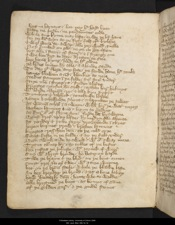hors ne harnays ؛ bot þey hit hard byen
512 (HL 515)Plate ne pesan ؛ ne pendauntes ende
while any lyme may laste ؛ or we þe lif haue
for þei ben feyn at þe fiӡt ؛ fals of byleue
& wel wenen at a wap ؛ alle þey wold quelle
516 (HL 519)Noþer grounded on god ؛ ne on no grace tristen
bot alle in storijs of stoure ؛ & in strengþ one
& we ben diӡt today ؛ driӡten to serue
hey heuen kyng ؛ hede to his owne
520 (HL 523)þe ledes louten hym alle ؛ & a-loude sayde
Today þat fleþe any fote ؛ þe fende haue his soule
bemes blowen anon ؛ blonkes to neӡe
stedis stampen in þe felde ؛ stif steil vndere
524 (HL 527)stiþe men in stiropys ؛ striden alofte
knyӡtes croysen hemself ؛ cacchen here helmys
with loude clarioun cry ؛ & alle kyn pypys
Tymbris & tabourris ؛ tonelande loude
528 (HL 531)Ӡeuen a schillande schout ؛ schrynken þe Iewes
as womman schal in a swem ؛ whan hire þe water neӡeþ
lacchen launces anon ؛ lepyn togedris
as fure out of flynt ston ؛ ferde hem bytwene
532 (HL 535)Doust drof vpon lofte ؛ dymedyn alle aboute
as þonder & þicke rayn ؛ þrowolande in skyes
beren burnes þrow ؛ brosten launces
knyӡtes crosschen doun ؛ to þe cold erþe
536 (HL 539)Fouӡt faste in þe felde ؛ & ay þe fals vndere
Doun swowande to swelt ؛ without swar more
Tytus tourneþ hym ؛ to tolles of þe bestes
for Iustes þe Iolieste ؛ with Ioyned of werre
540 (HL 543)suþ with a briӡt bronde ؛ he betiþ on harde
Tille þe brayn & þe blod ؛ on þe bent ornen
souӡt þroӡ anoþer side ؛ with a sore wepne
bet on þe broun stele ؛ while þe bladde laste
544 (HL 547)an hey breydeþ þe brond ؛ & as a bore lokeþ
how hetterly doun ؛ hente whoso wolde
alle briӡtned þe bent ؛ as bemys of sonne
Of þe gilden gere ؛ & þe goode stones
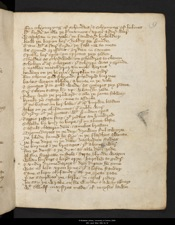 548 (HL 551)For schyueryng of schendes ؛ & schynyng of helmes
hit ferde as alle þe firmament ؛ vpon a fure were
waspasian in þe vale ؛ þe fanward byholdeþ
how þe heþyn here ؛ heldiþ to grounde
552 (HL 555)Cam with a faire ferde ؛ þe fals men to mete
as greued griffouns ؛ girden in samen
spakly here speres ؛ on sprotes þey ӡeden
scheldes as schidwod ؛ on scholdres tocleuen
556 (HL 559)schoken out of scheþes ؛ þat scharpe was y-grounde
& mallen metel ؛ þroӡ vnmylt hertes
hewen on þe heþen ؛ hurtlen togedre
For schorne gild schroud ؛ schedered burnee
560 (HL 563)baches woxen ablode ؛ aboute in þe vale
& goutes fram gold wede ؛ as goteres þey runne
sire sabyn setteþ hym vp ؛ whan hit so ӡede
Rideþ myd þe rereward ؛ & alle þe route folweþ
564 (HL 567)kenely þe castels ؛ came to assayle
þat þe bestes on here bake ؛ out of burwe ladden
Atles on þe olyfauntes ؛ þat orible were
Girdiþ out þe guttes ؛ with grounden speres
568 (HL 571)Rappis rispen forþ ؛ þat redles an hundred
scholde be busy to burie ؛ þat on a bent lafte
Castels clateren doun ؛ cameles brosten
Dromedaries to þe deþ ؛ drowen ful swyþe
572 (HL 575)þe blode fomed hem fro ؛ in þe flasches aboute
þe kne depe þe dale ؛ dascheden stedes
þe burnes in þe bretages ؛ þat aboue were
for þe doust & þe dyn ؛ as alle doun ӡede
576 (HL 580)al forstoppette in stele ؛ storte blynde wexen
whan hurdiӡs & hard erþe ؛ hurtled togedre
& vnder dromedaries ؛ doun diӡten hem sone
was non left vpon lyue ؛ þat alofte standeþ
580 (HL 583)saue o lepy olyfaunt ؛ at þe grete ӡate
þer as Cayphas þe clerke ؛ in castel rideþ
he say þe wrake on hem wende ؛ & away tourneþ
with twelf maystres made ؛ of moyses lawe
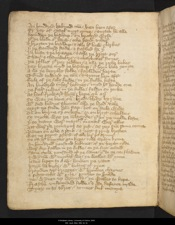 584 (HL 587)an hundred helmed men ؛ hien hem after
Er þey of castel myӡt come ؛ cauӡten hem alle
bounden þe bischup ؛ on bycchyd wyse
þat þe blode out barst ؛ eche band vndere
588 (HL 591)& broӡten þe bischup ؛ & alle his bew clerkes
þer þe standard stode ؛ & stadded hem þer
þe beste & þe britage ؛ & alle þe briӡt gere
Chaire & chaundelers ؛ & charbokel stones
592 (HL 595)þe rolles þat þey redden ؛ & alle þe riche bokes
þey broӡten myd þe bischup ؛ þou hym bale þouӡte
anon þe feyþles folke ؛ fayleden herte
Tourned toward þe toun ؛ & tytus hem after
596 (HL 599)Fele of þe fals ferde ؛ in þe felde lefte
an hundred in here helmes ؛ myd his honde one
þe fals Iewes in þe felde ؛ fallen so þicke
as hail froward heuen ؛ hepe ouer oþer
600 (HL 603)so was þe bent ouer brad ؛ blody by runne
with ded bodies aboute ؛ alle þe brod vale
Myӡt no stede doun stap ؛ bot on stele wede
Or on burne oþer on beste ؛ or on briӡt scheldes
604 (HL 607)so myche was þe multitude ؛ þat on þe molde lafte
þer so many were martred ؛ mereuail were ellis
Ӡit were þe romayns as rest ؛ as þey fram rome come
Ronnen ouer eche a renk ؛ & noӡt a ryng brosten
608 (HL 611)was no poynt perschid ؛ of alle here pris armure
so crist his knyӡtes gan kepe ؛ tille complyn tyme
an hundred þousand helmes ؛ of þe heþen syde
were fey fallen in þe felde ؛ or þe fiӡt ended
612 (HL 615)saue seuen þousand of þe somme ؛ þat to þe cite flowen
& wymmen with mychel wo ؛ þe walles withynne
ledes lepen to anon ؛ louken þe ӡates
barren hem bigly ؛ with boltes of yren
616 (HL 619)brayden vp brigges ؛ with brouden chaynes
& portecolis with pile ؛ picchen to grounde
þei wynnen vp whyӡtly ؛ þe walles to kepe
frasche vnfounded folke ؛ & grete defence made
620 (HL 623)Tyeþ into tourres ؛ tonnes ful manye
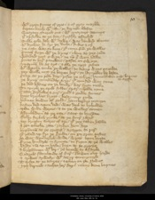with grete stones of gret ؛ & of gray marble
kepten kenly with caste ؛ þe kernels alofte
Quarten querels out ؛ with quarters attonys
624 (HL 627)þat oþer folke at þe fote ؛ freschly assayled
Tille eche dale with dewe ؛ was donked aboute
withdrowen hem fro þe diche ؛ dukes & oþer
þe caste was so kene ؛ þat come fram þe walles
628 (HL 631)Comen forþe with þe kyng ؛ clene as þy ӡede
wounded noӡt O wye ؛ ne non þat wem hadde
Princes to here pauelouns ؛ passen on swyþe
vnarmen hem as tyt ؛ & alle þe nyӡt resten
632 (HL 635)with wacche vmbe þe walles ؛ to many wyes sorowe
þey wolle noӡt þe heþen here ؛ so harmeles be lafte
sone as þe rede day ؛ rosen þe schye
bemes blowen anon ؛ burnes to aryse
636 (HL 639)þe kyng comaundeþ a cry ؛ þat comsed was sone
þe ded bodies on þe bonke ؛ bare forto make
To spoyle þe spilt folke ؛ spare scholde none
Geten girdeles & gere ؛ gold & goode stones
640 (HL 643)byes broches bryӡt ؛ besauntes riche
helmes hewen of gold ؛ hamberkes manye
kesten ded vpon ded ؛ was deil to byholde
Made wide weyes ؛ & to þe walles comen
644 (HL 647)assembleden at þe cite ؛ saut to bygynne
Folke ferlich þycke ؛ at þe foure ӡates
þey broӡten toures of tre ؛ þat þey taken hadde
aӡen euereche ӡate ؛ ӡarken hem hey
648 (HL 651)bygonnen at þe grettist ؛ a garrite to rere
Groded vp fro þe grounde ؛ on xij grete postes
he was wonderlich wide ؛ wroӡt vpon hyӡte
Fyue hundred in frounte ؛ to fiӡten at þe walles
652 (HL 655)hardy men vpon haste ؛ hyen at þe grecys
& bygonnen with bir ؛ þe borow to assayle
Quarels flambande of fure ؛ flowen out harde
& arwes arwely ؛ with attyr enuenymyd
656 (HL 659)Taysen at þe toures ؛ tachen on þe Iewes
þroӡ kernels cacchen here deþ ؛ many kene burnes
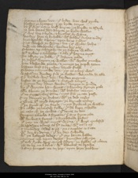brenten & beten doun ؛ þat bilde was wel þycke
brosten þe britages ؛ & þe brode toures
660 (HL 663)by þat was many bold burne ؛ þe burwe to assayle
þe hole batail boun ؛ aboute þe brode walles
þat were byg & brode ؛ & bycchet to wynne
wondere heye to byholde ؛ with holwe diches vndere
664 (HL 667)heye bonked aboue ؛ vpon boþe sydes
Riӡt wicked to wynne ؛ bot ӡif wyles helpe
bowmen atte bonke ؛ benden here gere
schoten vp scharply ؛ to þe schene walles
668 (HL 671)with arwes & arblastes ؛ & alle þat harme myӡt
To affray þe folke ؛ þat defence made
þe Iewes werien þe walles ؛ with wyles ynowe
hote blowande picche ؛ amonge þe peple ӡeten
672 (HL 675)brennen leed & brynston ؛ barels fulle
schoten schynande doun ؛ riӡt as schyre water
waspasian wendeþ fram þe walles ؛ wariande hem alle
Oþer busked were boun ؛ benden engynes
676 (HL 679)kesten at þe kernels ؛ & clustred toures
& monye dere daies worke ؛ dongen to grounde
by þat wriӡtes han wroӡt ؛ a wonder stronge pale
alle aboute þe burwe ؛ with bastiles manye
680 (HL 684)þat no segge vndere sonne ؛ myӡt fram þe cite passe
suþ dommyn þe diches ؛ with þe ded corses
Crammen hit myd karayn ؛ þe kirnels vnder
þat þe stynk of þe steem ؛ myӡt strike ouer þe walles
684 (HL 688)To coþe þe corsed folke ؛ þat hem kepe scholde
þe cors of þe condit ؛ þat comen to toun
stoppen euereche a streem ؛ þer any strem ӡede
with stockes & stones ؛ & stynkande bestes
688 (HL 692)þat þey no water myӡt wynne ؛ þat weren enclosed
waspasian tourneþ to his tente ؛ with titus & oþer
Commaundeþ consail anon ؛ on cayphas to sitte
with deþ by dome ؛ þat he dey scholde
692 (HL 696)with þe lettered ledes ؛ þat þey lauӡte hadde
Domesmen vpon deþes ؛ demeden swyþe
þat ech freke were quyk fleyn ؛ þe felles of clene
þen to be on a bent ؛ with blonkes todrawe
696 (HL 700)& suþ honget on an hep ؛ vpon heye galwes
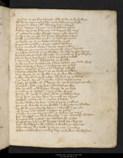þe feet to þe firmament ؛ alle folke to byholden
with hony vpon ech side ؛ þe hydeles anoynted
Corres & cattes ؛ with claures ful scharpe
700 (HL 704)Foure kagges & knyt ؛ to Cayphases þeyes
Twey apys at his armes ؛ to angren hym more
þat renten þe rawe flesche ؛ vpon rede peces
so was he pyned fram prime ؛ with persched sides
704 (HL 708)Tille þe sonne doun souӡt ؛ in sommere tyme
þe lered men of þe lawe ؛ a litel bynyþe
weren tourmented on a tre ؛ topsail walten
knyt to euerech clerke ؛ kene corres twey
708 (HL 712)þat alle þe cite myӡt se ؛ þe sorow þat þey dryuen
þe Iewes walten ouer þe walles ؛ for wo at þat tyme
seuen hundred slow hemself ؛ for sorow of here clerkes
somme hent here heere ؛ & fram þe hed pulled
712 (HL 716)& somme for deil ؛ daschande to grounde
þe kyng lete drawen hem adoun ؛ whan þey dede were
bade a bole fure betyn ؛ to brennen þe corses
kesten cayphas þeryn ؛ & his clerkes twelf
716 (HL 720)& brenten euereche bon ؛ into þe browne askes
suþ went to þe walle ؛ on þe wynde syde
& alle abrod on þe burwe ؛ blewen þe powdere
þer is doust for ӡour drynke ؛ adoun to hem crieþ
720 (HL 724)& bade hem bible of þat broþ ؛ for þe bischopes soule
þus ended coursed cayphas ؛ & his clerkes alle
alto brused myd bestes ؛ brent at þe laste
In tokne of tresoun ؛ & trey þat he wroӡt
724 (HL 728)whan crist þrow his conseil ؛ was cacched to deþ
by þat was þe day don ؛ dymned þe skyes
Merked montayns ؛ & mores aboute
foules fallen to fote ؛ & here feþres rusken
728 (HL 732)þe nyӡt wacche to þe walle ؛ & waytes to blowe
bryӡt fures aboute betyn ؛ abrode in þe oste
þe kyng & his consail ؛ carpen togedre
Chosen chyuentayns out ؛ & chiden no more
732 (HL 736)bot charged þe chekwecche ؛ & to chambre wenten
kynges & knyӡtes ؛ to cacchen hem reste
waspasian lyþ in his logge ؛ litel he slepiþ
bot walwyþ & wyndiþ ؛ & waltreþ aboute
736 (HL 740)Ofte tourneþ for tene ؛ & on þe toun þynkeþ
whan schadewes & schire day ؛ scheden attwynne
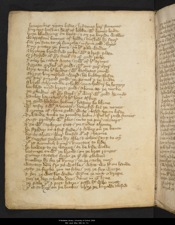leuerockes vpon lofte ؛ lyfteneþ here steuenes
burnes busken hem out of bedde ؛ with bemes loude
740 (HL 744)boþe blowyng on bent ؛ & on þe burwe walles
waspasian bounys of bedde ؛ busked hym fayre
fram þe fote to þe fourche ؛ in fyne gold cloþes
suþ putteþ þe prince ؛ ouer his pale wedes
744 (HL 748)a brynye browded þicke ؛ with a brest plate
Grayþed of gray steel ؛ & of gold riche
þerouer he casteþ a cote ؛ colour of his armys
a grete girdel of gold ؛ without gere oþere
748 (HL 752)layþ vmbe his lendis ؛ with lacchetes ynow
a bryӡt burnesched swerd ؛ he belteþ alofte
Of pure purged gold ؛ þe pomel & þe hulte
a brod schynande scheld ؛ on scholdire he hongiþ
752 (HL 756)bocklyd myd briӡt gold ؛ aboue at þe necke
þe glowes of gray steel ؛ þat were with gold hemmyd
hanleþ harnays ؛ & his hors askeþ
þe gold hewen helme ؛ haspeþ he blyue
756 (HL 760)with viser & with a vental ؛ deuysed for þe nones
a croune of clene gold ؛ was closed vpon lofte
Rybaunde vmbe þe rounde helm ؛ ful of riche stones
Pyӡt prudely with perles ؛ into þe pure corners
760 (HL 764)& so with saphyres sett ؛ þe sydes aboute
he strideþ on a stif stede ؛ & strikeþ ouer þe bente
liӡt as a lyoun ؛ were loused out of cheyne
his segges sewen hym alle ؛ & echon sayþ to oþer
764 (HL 768)þis is a comlich kyng ؛ knyӡtes to lede
he boweþ to þe barres ؛ or he bide wolde
betynge on with þe brond ؛ on þe bras rynges
Comeþ caytifes forþ ؛ ӡe þat crist slowen
768 (HL 772)knoweþ hym for ӡour kyng ؛ or ӡe cacche more
wayteþ doun fro þe walle ؛ what wo his on hande
May ӡe fecche ӡou no fode ؛ þoӡ ӡe fey worþe
& þoӡ ӡe waterles wede ؛ wynne ӡe noӡt o droppe
772 (HL 776)þoӡ ӡe deþ scholde dey ؛ daies in ӡour lyue
þe pale þat I piӡt haue ؛ passe hit who myӡt
þat is so byg on þe bonke ؛ & haþ þe burowe closed
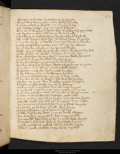Fourty to fyӡten ؛ aӡens fyue hundred
776 (HL 780)þoӡ ӡe were etnes echon ؛ in scholde we wende
& more manschyp were hit ؛ ӡit mercy by seche
þan metles marre ؛ þere no myӡt helpys
was non þat warpiþ a word ؛ bot waytes here poyntes
780 (HL 784)Ӡif stertis on stay ؛ with stones hem to kylle
þan wroþ as a wode bore ؛ he wendeþ his bridul
Ӡif ӡe as dogges wol dey ؛ þe deuel haue þat recche
& or I wende fro þis walle ؛ ӡe schul wordes schewe
784 (HL 788)& efte spaklokere speke ؛ or y ӡour speche owene
by þat a Iewe Iosophus ؛ þe gentyl clerke
hadde wroӡt a wondere wyle ؛ whan hem water fayled
Made wedes of wolle ؛ in wete forto plunge
788 (HL 792)water waschen as þey were ؛ & on þe walle hengen
þe wedes dropeden ؛ doun deyed ӡerne
Rich rises hem fro ؛ þe romayns byholden
wenden wel here wedes ؛ hadde wasschyng so ryue
792 (HL 796)þat no wye in þe wone ؛ water schold fayle
waspasian þe wile ؛ wel ynow knewe
loude lawӡþe þer at ؛ & lordlynges byddis
No burne abasched be ؛ þoӡ þey þis bost make
796 (HL 800)hit beþ bot wyles of werre ؛ for water hem fayleþ
þan was no þyng ؛ bot a newe note to bygynne
assaylen on eche a side ؛ þe cite by halues
Merken myd manglouns ؛ ful vnmete dyntes
800 (HL 804)& myche of masouns note ؛ þey marden þat tyme
þerof was Iosophus ware ؛ þat myche of werre couþe
& sette on þe walle side ؛ sakkes myd chaf
aӡens þe streyngþe of þe stroke ؛ þer þe stones hytte
804 (HL 808)þat alle dered noӡt a dyӡs ؛ bot grete dyt made
þe romayns runne to anon ؛ & on roddes knytte
siþes for þe sackes ؛ þat selly were kene
Raӡten to þe ropis ؛ rent hem in sondere
808 (HL 812)þat alle dasschande doun ؛ into þe diche flatten
bot Iosophus þe gynful ؛ here engynes alle
brenten with brennande oyle ؛ & myche bale wroӡt
waspasian wounded was þer ؛ wonderlich sore
812 (HL 816)þrow þe hard of þe hele ؛ with an hande darte
þat boot þrow þe bote ؛ & þe bone nayled
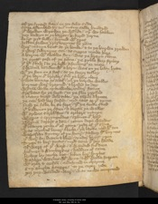Of þe frytted fote ؛ in þe folis syde
sone assembled hym to ؛ many sadde hundred
816 (HL 820)þat wolden wrecken þe wounde ؛ oþer wo habben
þey bowyn to þe barres ؛ bekered ӡerne
fouӡt riӡt felly ؛ foyned with speres
Iolken Iewes þroӡ ؛ engynes by þanne
820 (HL 824)were manye bent at þe bonke ؛ & to þe burwe þrewen
þer were selcouþes sen ؛ as segges mowe here
a burne with a balwe ston ؛ was þe brayn cloue
þe gretter pese of þe panne ؛ þe pyble forþ strikeþ
824 (HL 828)þat hit flow in to þe feld ؛ a forlong or more
a womman bounden with a barn ؛ was on þe body hytte
with þe ston on a staf ؛ as þe storyj telleþ
þat þe barn out brayde ؛ fram þe body clene
828 (HL 832)& was born vp as a bal ؛ ouer þe burwe walles
burnes were brayned ؛ & brosed to deþ
wymmen wide open ؛ walte vndere stones
frosletes fro þe ferst ؛ to þe flor þrylled
832 (HL 836)& many toret doun tilte ؛ þe temple aboute
þe cite had ben seised ؛ myd saut at þat tyme
Nad þe folke be so fers ؛ þat þe fende serued
þat kilden on þe cristen ؛ & kepten þe walles
836 (HL 840)with arwes & arblastes ؛ & archers manye
with speres & spryngoldes ؛ sponnen out hard
Dryuen dartes adoun ؛ ӡeuen depe woundes
þat manye renke out of rome ؛ reste of þat synne
840 (HL 844)was mychel leuere a leche ؛ þan layke myd his ton
waspasian stynteþ of þe stoure ؛ steweþ his burnes
þat were forbeten & bled ؛ vndere bryӡt yren
Tyen to here tentis ؛ myd tene þat þey hadde
844 (HL 848)al wery of þat werk ؛ & wounded ful sore
helmes & hamberkes ؛ hadden of sone
leches by torche liӡt ؛ loken here hurtes
waschen woundes with wyn ؛ & with wolle stoppen
848 (HL 852)with oyle & orisoun ؛ ordeyned in charme
suþ euereche a segge ؛ to þe soper ӡede
þoӡ þey wounded were ؛ was no wo nempned
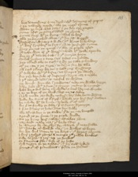bot daunsyng & no deil ؛ with dynnyng of pipis
852 (HL 856)& þe nakerer noyse ؛ alle þe nyӡt tyme
whan þe derk was doun ؛ & þe day spryngen
sone after þe sonne sembled þe grete
Comen forþ with þe kyng ؛ conseil to here
856 (HL 860)alle þe knyӡthod clene ؛ þat for crist werred
waspasian waiteþ awide ؛ his wyes byholdeþ
þat were freschere to fiӡt ؛ þan at þe furst tyme
prayeþ princes on ernest ؛ & alle þe peple after
860 (HL 864)þat eche wye of þat werre ؛ schold his wille specke
for or þis toun be tak ؛ & þis toures heye
Michel torsom & tene ؛ vs tides on hande
þey tourned alle to titus ؛ & hym þe tale scheweþ
864 (HL 868)Of þe cite & þe sege ؛ to seyn for hem alle
þan titus tourneþ hem to ؛ & talkyng bygynneþ
þus to layke with þis lesne ؛ vs lympis þe worse
for þey ben fele of defence ؛ ferce men & noble
868 (HL 872)& þis toured toun ؛ is tenful to wynne
þe worst wrecche in þe wone ؛ may on walle lygge
strike doun with a ston ؛ & stuny many knyӡtes
whan we schul hone & byholde ؛ & litel harme wirche
872 (HL 876)& ay þe loþe of þe layk ؛ liӡt on vsselue
Now mowe þey ferke no ferre ؛ here fode forto wynne
wolde we stynt of our strif ؛ whyle þey here store maden
we scholde with hem honte ؛ to hoke out of toun
876 (HL 881)for þer as fayleþ þe fode ؛ þer is feynt strengþe
& þer as hunger is hote ؛ hertes ben feble
alle assenteden to þe sawe ؛ þat to þe cite longed
apaied as þe prince & þe peple wolde
880 (HL 885)To þe kyng were called ؛ constables þanne
Marchals maser men ؛ þat he to tristiþ
he chargeþ hem chersly ؛ for chaunce þat may falle
with wacche of waled men ؛ þe walles to kepe
884 (HL 889)for we wol hunten at þe hart ؛ þis heþes aboute
& hure racches renne ؛ amonge þis rowe bonkes
Ride to þe reuer ؛ & rere vp þe foules
se faucouns fle ؛ fele of þe beste
888 (HL 893)Ech segge to þe solas ؛ þat hymself lyked
princes out of pauelouns ؛ presen on stedes
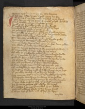Tornen trifflyn ؛ & on þe þe toun wayten
þis lyf þey ledde longe ؛ & god ӡyue vs grace
Passus
Three
892 (HL 897)In Rome Nero haþ now ؛ mychel noye wroӡt
To deþ pyned þe pope ؛ & myclel peple quelled
Petre apostlen prince ؛ & seint poule
senek & þe senatours ؛ & alle þe cite fured
896 (HL 901)his modire & his mydewif ؛ Murdred to deþe
Combred cristen fele ؛ þat on crist leued
þe romayns resen anon ؛ whan þey þus rewþe seyen
To quelle þe emperour quyk ؛ þat hem vnquemed hadde
900 (HL 905)þey pressed to his paleys ؛ porayle & oþer
To brenten þe bold kyng ؛ in his burwe riche
þe cite & þe senatours ؛ assented hem boþe
Non oþer dede was to doun ؛ þey han his dome ӡolden
904 (HL 909)þan flowe þat freke ؛ frendles alone
Out at a pore posterne ؛ & alle þe peple folwed
with a tronchoun of tre ؛ toke he no more
Of alle þe glowande gold ؛ þat he on grounde hadde
908 (HL 913)On þat tronchoun with his teþ ؛ he toggeþ & byteþ
Tille hit was piked at þe poynt ؛ as a pokes ende
þan abideþ þat burne ؛ & biterlych spekeþ
To alle þe wyes þat þer were ؛ wordes aloude
912 (HL 917)Tourneþ traytours aӡen ؛ schal neuer þe tale rise
Of no karl by þe coppe ؛ how he his kyng quelde
hymself he strykeþ myd þat staf ؛ streӡt to þe hert
þat þe colke toclef ؛ & þe kyng deyed
916 (HL 921)six monþe after & no more ؛ þis myschef bytydde
þat waspasian was went ؛ to werry on þe Iewes
foure mettyn myle out of rome ؛ to mynde for euere
þat erst was emperour of alle ؛ þus ended in sorow
920 (HL 925)þe grete togedres þan ؛ chossen hem anoþer
On gabba a gome ؛ þat mychel grem hadde
þroӡ Othis lyous a lord ؛ þat hym longe hated
& at þe last þat lord ؛ out of lyf hym broӡt
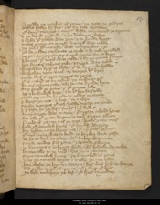 924 (HL 929)amydde þe market of rome ؛ þe mette togedres
Othis falliþ hym fey ؛ ӡaf hym fale woundes
þat foure monþes & more ؛ hadde mayntened þe croune
& þo deyed þe duke ؛ & þe diademe lefte
928 (HL 933)& whan þat gabba was gon ؛ & to grounde broӡt
Othis entriþ on ernest ؛ & emperour was made
þe man in his maieste ؛ was monþes bot þre
þan he ӡeldeþ sathanas þe soule ؛ & hymself quelled
932 (HL 937)þe romayns risen vp a renk ؛ rome forto kepe
a knyӡt þat vitel was calde ؛ & hym þe croune rauӡte
bot for sire sabyns sake ؛ a segge was noble
waspasian broþer of blode ؛ þat he brytned hadde
936 (HL 941)waspasian vpon vitel ؛ to vengen his broþer
souӡt out of surrie ؛ segges to rome
þat is naked as an nedul ؛ þe newe emperour
for sire sabyns sake ؛ alle þe cite drowe hym
940 (HL 945)suþ gored þe gome ؛ þat his guttes alle
as a bowewed beste ؛ in to his breche felle
Doun ӡernande he ӡede ؛ & ӡeldeþ þe soule
& kayӡt þe cors ؛ & kast in to tybre
944 (HL 949)seuen monþes þis man ؛ hadde septre on hande
& þus loste he þe lyf ؛ for his luþer dedes
anoþer segge was to seke ؛ þat septre schold haue
for alle þis grete ben gon ؛ & neuer agayn tournen
948 (HL 953)Now of þe cite & of þe sege ؛ wolle y sey more
how þis comelich kyng ؛ þat for crist werreþ
haþ holden yn þe heþen men ؛ þis oþer half wynter
þat neuer burne was so bold ؛ þe burwe for to passe
952 (HL 957)as he to dyner on a day ؛ with dukes was sette
Comen renkes fram rome ؛ rapande swyþe
In bruneys & in bryӡt wede ؛ with bodeworde newe
louten alle to þe lord ؛ lettres hym rauӡten
956 (HL 961)sayn comelich kyng ؛ þe knyӡthod of rome
þroӡ þe senatours assent ؛ & alle þe cite ellis
han chosen þe her chyuentayn ؛ here chef lorde to worþe
and riche emperour of rome ؛ þus redeþ þis lettres
960 (HL 965)þe lord vnlappeþ þe lef ؛ þis lettres byholdeþ
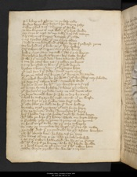Ouerlokeþ ech a lyne ؛ to þe last ende
bordes born were doun ؛ & þe burne riseþ
Calleþ consail anon ؛ & kyþeþ þis speche
964 (HL 969)Ӡe ben burnes of my blod ؛ þat y best wolde
My sone is next to myself ؛ & oþer sib manye
sire sabyn of surrie ؛ a segge þat y triste
& oþer frendes fele ؛ þat me fayþ owen
968 (HL 973)Now is me bodeword of blys ؛ broӡt froward rome
To be lord ouer þat lond ؛ as þis lettres spekeþ
sire sabyn of surrie ؛ sey þe byhouyþ
how y myӡt myself ؛ & I so wroӡt
972 (HL 977)For y haue heylych heyӡt ؛ here forto lenge
Tille I þis toured doun ؛ han taken at wile
& me þe ӡates ben ӡet ؛ & ӡolden þe keyes
& suþ honshed on hem ؛ þat þis hold kepyn
976 (HL 981)brosten & betyn doun ؛ þis britages heye
þat neuer ston in þat stede ؛ stond vpon oþere
kyþe þe consail sire knyӡt ؛ þis kyng to hym sayde
for y wol worche by þy witt ؛ ӡif worschip may folowe
980 (HL 985)þan seiþ sire sabyn anon ؛ semelich lord
we ben wyes þe with ؛ þy worschup to furþer
Of longe tyme bylafte ؛ & ledes þyn owen
þat we doun is þy dede ؛ may no man demen elles
984 (HL 989)þe dom demed was þer ؛ whoso doþ by anoþer
schal be soferayn hymself ؛ seint in þe werke
for as fers is þe freke ؛ atte ferre ende
þat ofte fleis þe fel ؛ as he þat foot holdeþ
988 (HL 993)bytake tytus þy sone ؛ þis toun forto kepe
& to þe douӡti duke ؛ domyssian his broþer
here I holde vp myn honde ؛ myd hem forto lenge
with alle þe here þat I haue ؛ while my herte lasteþ
992 (HL 997)& þou schalt ride to rome ؛ & receyue þe croune
In honour emperour to be ؛ as þyn eure schapiþ
so may þy couenaunt be kept ؛ þat þou to crist made
þyself dest þat þy sondiours ؛ by þyn assent worchen
996 (HL 1001)þan with a liouns lote ؛ he lifte vp þe eyen
To titus tourneþ anon ؛ & hym þe tale schewed
& as sire sabyn hadde seid ؛ he hym sone granteþ
with his broþer & þe burne ؛ as he hym blesse wolde
1000 (HL 1005)& I wol tarie at þis toun ؛ til I hit taken haue
Made weys þrow ؛ for wenes & cartes
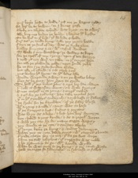Oure boþere heste to holde ؛ ӡif me þe happis tydiþ
Or here be tohewen ؛ or I hennes passe
1004 (HL 1009)a boke on a brode scheld ؛ was broӡt on to swere
alle burnes boden þe honde ؛ & barouns hit kyssen
To be leel to þat lord ؛ þat hem lede scholde
sire titus þe trewe kyng ؛ tille þey þe toun hadde
1008 (HL 1013)fayn as þe foul of day ؛ was þe freke þanne
kysseþ knyӡtes anon ؛ with carful wordes
My wele & my worschup ؛ ӡe weldeþ to kepe
for þe tresour of my treuþ ؛ vpon þis toun hengyþ
1012 (HL 1017)I nold þis toun were vntake ؛ ne þis toures heye
for alle þe glowande golde ؛ vpon grounde riche
be no ston in þe stede ؛ stonden alofte
bot alle ouer tourned ؛ & tilt temple & oþer
1016 (HL 1021)þus laccheþ his leeue ؛ at his ledes alle
wende wepande away ؛ & on þe walles lokeþ
Praieþ as he gooþ ؛ hem grace to sende
To hold þat þey byhot han ؛ & neuer here herte chaunge
1020 (HL 1025)Now is waspasian went ؛ ouer wale stremys
Euen entred into rome ؛ & emperour maked
& titus for þe tydyng ؛ han take mychel Ioye
þat in his synwys soudeynly ؛ a syknesse is fallen
1024 (HL 1029)þe freke for þe fayndom ؛ of þe fadere blysse
with a cramp & a colde ؛ cauӡt was so hard
þat þe fyngres & feet ؛ fustes & Ioyntes
was lyþy as a leke ؛ & lost han here strengþe
1028 (HL 1033)ben croked aӡens kynde ؛ & as a crepel woxen
& whan þey sey hym so ؛ many segge wepyþ
þey wende to þe cite ؛ & souӡten a leche
þat couþe keuere þe kyng ؛ & condis delyueryn
1032 (HL 1037)whan þey þe cyte hadde souӡt ؛ with seggys aboute
fynde couþe þey no man ؛ þat on þe feet couþe
saue þe self Iosophus ؛ þat surgyan was noble
& he graunteþ to go ؛ with a goode wylle
1036 (HL 1041)whan he was comen to þe kyng ؛ & þe cause wyste
how þe segge so sodeynly ؛ in syknesse is fallen
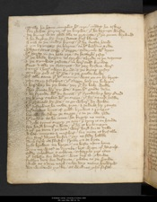Tille he haue complet his cure ؛ condit he askeþ
for what burne of þe burwe ؛ þat he brynge wolde
1040 (HL 1045)þe kyng was glad alle to graunte ؛ þat þe gome wylned
& he ferkiþ hym forþ ؛ fettes ful blyue
a man to þe mody kyng ؛ þat he moste hated
& yn bryngeþ þe burne ؛ to his beddes syde
1044 (HL 1049)whan tytus saw þat segge ؛ sodeynly with eyen
his herte in an hote yre ؛ so hetterly riseþ
þat þe blode bygan to spred ؛ abrode in þe vaynes
& þe synwes resorte ؛ in here self kynde
1048 (HL 1053)Feet & alle þe fetoures ؛ as þey byfore were
Comyn in here owen kynde ؛ & þe kyng ryseþ
þonkeþ god of his grace ؛ & þe goode leche
Of alle saue þat his enemy ؛ was yn on hym broӡt
1052 (HL 1057)þan sayþ Iosophus ؛ þis segge haþ þe holpyn
& here haþ be þy bote ؛ þoӡ þou hym bale wolde
þerfor graunte hym þy grace ؛ aӡen his goode dede
& be frende with þy foman ؛ þat frendschup haþ serued
1056 (HL 1061)þe kyng satles with þe segge ؛ þat hym saued hadde
& þer graunted hym grace ؛ to go where he wolde
with Iosophus he made Ioye ؛ & Iewels hym rauӡte
besauntes byes of gold ؛ broches & ryngys
1060 (HL 1065)bot alle forsakeþ þe segge ؛ & to þe cite ӡede
with condit as he come ؛ he kepiþ no more
Now tytus segyþ þe toun ؛ þer tene is on hande
for hard hunger & hote ؛ þat hem is bylompyn
1064 (HL 1069)& of þe tene in þe toun ؛ were hard for to telle
what moryne & meschef ؛ for mete is byfalle
for foure dayes byfor ؛ þey no fode hadde
Noþer fisch ne flesch ؛ freke on to byte
1068 (HL 1073)bred browet ne broþe ؛ ne beste vpon lyue
wyn ne water to drynke ؛ bot wope of hemself
Olde scheldes & schone ؛ scharply þey eten
þat liflode for ladies ؛ was luþer to chewe
1072 (HL 1077)fellen doun for defaute ؛ platte to þe grounde
Ded as a dore nayl ؛ eche day many hundred
wo wakned þycke ؛ as wolues þey ferde
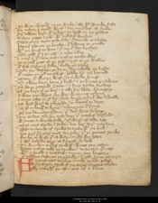þe wye waried on þe woke ؛ alle his wombe fille
1076 (HL 1081)On marie a myld wyf ؛ for meschef of foode
hire owen barn þat ӡo bare ؛ ӡo brad on þe gledis
Rostyþ rigge & rib ؛ with rewful wordes
sayþ sone vpon eche side ؛ our sorow is alofte
1080 (HL 1085)batail aboute þe borwe ؛ our bodies to quelle
with yn hunger so hote ؛ þat neӡ our herte brestyþ
þerfor ӡeld þat I þe ӡaf ؛ & aӡen tourne
& entre þer þou cam out ؛ & etyþ a schouldere
1084 (HL 1089)þe smel roos of þe rost ؛ riӡt to þe walles
þat fele fastyng folke ؛ felde þe sauere
Doun þei daschen þe dore ؛ dey scholde þe berde
þat mete yn þis meschef ؛ hadde from men loyned
1088 (HL 1093)þan saiþ þat worþi wif ؛ in a wode hunger
Myn owen barn haue I brad ؛ & þe bones gnawen
Ӡit haue I saued ӡou som ؛ & forþ a side feccheþ
Of þe barn þat ӡo bare ؛ & alle hire blode chaungeþ
1092 (HL 1097)away þey went for wo ؛ wepyng echone
& sayn alas in þis lif ؛ how longe schul we dwelle
Ӡit beter were at o brayde ؛ in batail to deye
þan þus in langur to lyue ؛ & lengþen our fyne
1096 (HL 1101)þan þey demeden a dom ؛ þat deil was to hure
To voiden alle by vile deþ ؛ þat vitelys destruyed
wymmen & weyke folke ؛ þat weren of olde age
Myӡt noӡt stonde in stede ؛ bot here store mardyn
1100 (HL 1105)after to touche of trewe ؛ to trete with þe lord
bot titus graunteþ noӡt for gile ؛ þat þe gomes þenke
For he is wise þat is war ؛ or hym wo hape
& with falsede afere ؛ is fairest to dele
1104 (HL 1109)To worchyn vndere þe wal ؛ wyes þey casten
whan tytus nold no trewe ؛ to þe toun graunte
with mynours & masouns ؛ myne þey bygonne
Grobben faste on þe grounde ؛ & god ӡyue vs Ioye
Passus
Two
1108 (HL 1113)As tytus after a tyme ؛ vmbe þe toun redeþ
wyþ sixty speres of þe sege ؛ segges a fewe
alle outwith þe ost ؛ out of a kaue
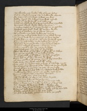vp a buschment brake ؛ alle of briӡt hedis
1112 (HL 1117)fyf hundred fiӡtyng men ؛ & fellen hem aboute
In Iepouns & Iambers ؛ Iewes þey were
hadde wroӡt hem a wey ؛ & þe wal myned
& titus tourneþ hem to ؛ without tale more
1116 (HL 1121)schaftes schedred were sone ؛ & scheldes yþrelled
brunyes & bryӡt wede ؛ blody byrunne
& many segge at þat saute ؛ souӡte to þe grounde
hacchen vpon hard steel ؛ with an herty wille
1120 (HL 1126)þat fure out flowen ؛ as of flynt stonys
Of þe helm & þe hed ؛ hewen at tonys
þe stompe vndere stede feet ؛ in þe steel leueþ
þe ӡong duk domycian ؛ of þe dyn herde
1124 (HL 1130)and dissed out of þe ost ؛ with eӡte hundred speres
Fel on þe fals folke ؛ vmbe feldes hem sone
as bestes bretnes hem alle ؛ & haþ his broþer holpen
þan titus toward his tentis ؛ tourneþ hym sone
1128 (HL 1134)Makeþ mynour & men ؛ þe myne to stoppe
after profreþ pes ؛ for pyte þat he hadde
whan he wist of here wo ؛ þat were withyn stoken
bot Ion þe Ienfulle ؛ þat þe Iewes ladde
1132 (HL 1138)anoþer symond of his assent ؛ forsoke þe profre
sayn leuer in þis lif ؛ lengen hem were
þan any renke out of rome ؛ Ioyced here sorowe
sale in þe cite ؛ was cesed with þanne
1136 (HL 1142)was noӡt for besauntes to bye ؛ þat men bite myӡt
for a ferþyng worþ of fode ؛ floryns an hundred
princes profren in þe toun ؛ to pay in þe fuste
bot alle was boteles bale ؛ fro who so bred hadde
1140 (HL 1146)Nold a gobet haue ӡouen ؛ for goode vpon lyue
wymmen falwed faste ؛ & here face chaungen
Feynte & fallen doun ؛ þat so faire were
swounen swallen as swyn ؛ som swart wexen
1144 (HL 1150)som lene on to loke ؛ as laterne hornes
þe morayne was so myche ؛ þat no man couþe telle
where to burie in þe burwe ؛ þe bodies þat were ded
bot wenten with hem to þe walle ؛ & walten euere
1148 (HL 1154)Into þe depe of þe diche depe ؛ þe ded doun fallen
whan titus told was þe tale ؛ to trewe god he vouched
þat hadde propfred hem pes ؛ & grete pite hadde
þo praied he he hadde Iosophus ؛ to preche þe peple
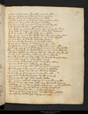 1152 (HL 1158)enforme hem to saue hemself ؛ & þe cite ӡelde
bot Ion forsoke þe sawe ؛ so forto wyrche
with symond þat oþer segge ؛ þat þe cyte ladde
Myche peple for þe prechyng ؛ at þe posterne ӡatis
1156 (HL 1162)Tyen out of þe toun ؛ & tytus bysecheþ
To forӡyue hem þe gult ؛ þat þey to god wroӡt
& he graunteþ hem grace ؛ & gaylers bytauӡt
bot whan þey metten with mete ؛ vnmyӡty þey were
1160 (HL 1166)any fode to defye ؛ so faynt was here strengþe
Ful þe gottes of gold ؛ eche gome hadde
lest fomen fongen hem schold ؛ here floreyns þey eten
whan hit was broӡt vp abrode ؛ & þe bourd aspyed
1164 (HL 1170)souӡten leue of þat lord ؛ ledes hem slowen
Toren euereche a gome ؛ & þe gold taken
Fayn of þe floreyns ؛ were þe frekes alle
ay were þe ӡates vnget ؛ tille two ӡeres ende
1168 (HL 1174)so longe þey þouӡt hit by sege ؛ or þey þe toun hadde
Eleuen hundred þousand Iewes ؛ in þe mene whyle
swalten while þe sweng last ؛ by swerd & by hunger
Now titus conseil haþ take ؛ þe toun to assayle
1172 (HL 1178)To wynne hit on eche side ؛ of warwolues handes
Neuer pyte ne pees ؛ profre hem more
Ne gome þat he gete may ؛ to no grace taken
armen hem as tyt ؛ alle for þe werre
1176 (HL 1182)Tyen euen to þe toun ؛ with trompis & pypys
with nakerers & grete noyce ؛ neӡen þe walles
þer many styf man & stoure ؛ stondiþ alofte
sire sabyn of surrye ؛ on a syde ӡede
1180 (HL 1186)þe ӡong duke domycian ؛ drow to anoþer
XV þousand men ؛ eche freke hadde
with many maner of engyne ؛ & mynours ynowe
Tytus at þe toun ӡate ؛ with ten þousand helmes
1184 (HL 1190)Merkeþ mynour at þe wal ؛ where þey mynde scholde
On ech side for þe assaute ؛ setteþ engynes
& bold brayned men ؛ in belfrayes heye
was noӡt bot dyn & dyt ؛ as alle deye scholde
1188 (HL 1194)so eche lyuande lyf ؛ layeþ on oþere
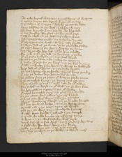at eche kernel was cry ؛ & quasschyng of wepne
& many burne atte brayd ؛ brayned to deþ
sire sabyn of surrye ؛ whyle þe saute laste
1192 (HL 1198)leyþ a ladder to þe wal ؛ & alofte clymyþ
wendeþ wyӡtly þeron ؛ þoӡ hym wo happned
& vp stondiþ for ston ؛ or for steel gere
syx he slow on þe wal ؛ sire sabyn alone
1196 (HL 1202)þe seueþ hitteþ on hym ؛ an vnhende dynte
þat þe brayn out brast ؛ at boþ nose þrylles
& sabyn ded of þe dynt ؛ into þe diche falleþ
þan tytus wepyþ for wo ؛ & warieþ þe tyme
1200 (HL 1206)syþ he þe lede haþ lost ؛ þat he loue scholde
For now is a duke ded ؛ þe douӡtiest y trowe
þat euer stede bystrode ؛ or any steel wered
Tytus on þe same side ؛ setteþ an engyne
1204 (HL 1210)a sowe wroӡt for þe werre ؛ & to þe wal dryueþ
þat alle ouerwalte þer he went ؛ & wyes an hundred
were ded of þat dynt ؛ & in þe diche lyӡten
þan tytus heueþ vp þe honde ؛ & heuen kyng þonkeþ
1208 (HL 1214)þat þey þe dukes deþ ؛ han so dere bouӡte
þe Iewes praien þe pees ؛ þis was þe paske euene
& þe comelich kyng ؛ þe keyes out rauӡten
Nay traytours quod tytus ؛ now take hem ӡourselfen
1212 (HL 1218)For schal no ward on ӡour wal ؛ vs þe way lette
we han geten vs a gate ؛ aӡen ӡour wille
þat schal ben satled soure ؛ on ӡoure sory kynde
Or þe ӡates were ӡolden ؛ þre ӡere byfore
1216 (HL 1222)Ouer þe cyte were seyn ؛ selcouþe þynges
a bryӡt brendyng swerd ؛ ouer þe burwe henged
without hond oþer helpe ؛ saue þe heuen one
armed men in þe ayere ؛ vpon ost wyse
1220 (HL 1226)Ouer þe cyte were seyn ؛ sundrede tymes
a calf aӡen kynde ؛ calued in þe temple
& eued an ewe lombe ؛ at offryng tyme
a wye on þe wal ؛ cried wondere heye
1224 (HL 1230)voys fram est & fram west ؛ & fram þe foure wyndis
& sayd wo wo wo ؛ worþ on ӡou boþe
Ierusalem þe Iewen toun ؛ & þe Ioly temple
Ӡit sayþ þe wye on þe walle ؛ O word more
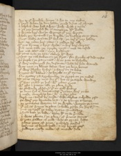 1228 (HL 1235)wo to þis worldly wone ؛ & wo to myselue
& deyd whan he don hadde ؛ þrow dynt of slynge
& haplich was had away ؛ how wyst I neuere
& þan þey deuysed hem ؛ & vengaunce hit helde
1232 (HL 1238)& wyten her wo ؛ þe wronge þat þey wroӡte
whan þey brutned in þe burwe ؛ þe byschup seint Iame
Noӡt wolde acounte hit for crist ؛ þe care þat þey hadde
bot vp ӡeden here ӡates ؛ & ӡelden hem alle
1236 (HL 1242)without brunee & briӡt wede ؛ in here bare chertes
Fram none tille þe merke myӡt ؛ neuer ne cesed
bot man after man ؛ mercy bysouӡt
Tytus into þe toun ؛ takeþ his wey
1240 (HL 1246)Myӡt no man stoken on þe stret ؛ for stynke of ded corses
þe peple in þe pauyment ؛ was pite to byholde
þat were enfamyed for defaute ؛ whan hem fode wanted
was noӡt on ladies lafte ؛ bot þe lene bones
1244 (HL 1250)þat were fleschy byfore ؛ & fayre on to loke
burges with balies ؛ as barels or þat tyme
No gretter þan a grehounde ؛ to grype on þe medil
Tytus tarieþ noӡt for þat ؛ bot to þe temple wendiþ
1248 (HL 1254)þat was rayled þe roof ؛ with rebies grete
with perles & peritotes ؛ alle þe place ferde
as glowande gledfure ؛ þat on gold stikeþ
þe dores ful of dyemauntes ؛ dryuen were þicke
1252 (HL 1258)& made merueylous lye ؛ with mergeri perles
derst no candel be tende ؛ whan clerkes scholde rise
so were þey lemaunde lyӡt ؛ & as a lampe schonen
þe romayns wayten on þe werke ؛ warien þe tyme
1256 (HL 1262)þat euer so precious a place ؛ scholde persche for here synne
Out þe tresour to take ؛ tytus commaundyþ
Doun bete þe bilde ؛ brenne hit into grounde
þer was plente in þe place ؛ of precious stonys
1260 (HL 1266)Grete gaddes of gold ؛ whoso grype lyste
platis pecis of peys ؛ pulsched vessel
bassynes of brend gold ؛ & oþer bryӡt gere
Pelours masly made ؛ of metals fele
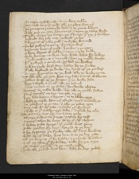 1264 (HL 1270)In coppe craftly cast ؛ & in clene seluere
Peynted as pure gold ؛ alle þe place was ouer
þe romayns renten hem doun ؛ & to rome ledyn
whan þey þe cyte han souӡt ؛ vpon þe same wyse
1268 (HL 1274)Telle couþe no tonge þe tresours ؛ þat þey þer founden
Iewels for Ioly men ؛ Iewels riche
Floreyns of rede gold ؛ no freke wanted
Riche peloure & pane ؛ princes to were
1272 (HL 1278)besantes bies of gold ؛ broches & rynges
Clene cloþes of selke ؛ many carte fulle
wele wanteþ no wye ؛ bot wale what hym lykeþ
Now masouns & mynours ؛ han þe molde souӡte
1276 (HL 1282)with pykeyse & ponsone ؛ persched þe walles
hewen þrow hard ston ؛ hadde hem to grounde
þat alle derkned þe diche ؛ for doust of þe poudere
so þey wrouӡten at þe wal ؛ alle þe woke tyme
1280 (HL 1286)Tille alle þe cyte was serched ؛ & souӡt al aboute
Maden wast at þe wappe ؛ þer þe walle stode
boþe in temple & in tour ؛ alle þe toun ouer
Nas no ston in þe stede ؛ stondande alofte
1284 (HL 1290)Mortere ne made walle ؛ bot alle to Mulle fallen
Noþer tymbre ne tre ؛ temple ne oþer
bot doun betyn & brent ؛ into blake erþe
& whan þe temple was ouer tourned ؛ tytus commaundys
1288 (HL 1294)In plowes to putte ؛ & alle þe place erye
suþ sow hit with salt ؛ & seide þis wordes
Now is þis stalwourþe stede ؛ distroied for euere
Tytus suþ sett hym ؛ on a sete riche
1292 (HL 1298)as Iuge Iewes to Iugge ؛ Iustise hymself
Crioure callen hem forþ ؛ as hy þat crist slowen
& beden pilat apere ؛ þat prouost was þanne
pilat proffriþ hym forþ ؛ apered at þe barre
1296 (HL 1302)& he frayneþ þe freke ؛ alle with faire wordis
whan crist of dawe was don ؛ & to þe deþ ӡede
Of þe heuyng þat he hadde ؛ & þe hard woundis
& of þe tene þat hym tidde ؛ telle hym þe soþe
1300 (HL 1305)þan melys þe man ؛ & þe matere tolde
how alle þe ded was don ؛ whan he deþ þoled
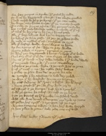for þritty penyes in a poke ؛ his postel hym solde
so was he bargayned & bouӡt ؛ & as a beste quelled
1304 (HL 1309)Now corsed be he quod þe kyng ؛ þat þe cate made
he wexe marchaunte amys ؛ þat þe money fenged
To sille so precyous a prince ؛ for penyes so fewe
bot I schal marchaundise make ؛ in mynde of þat oþer
1308 (HL 1314)þat schal be heþyng to hem ؛ or I hennes passe
alle þat here bodyes wol by ؛ or bargaynes make
by lowere pris forto passe ؛ þan þey þe prophete solde
he made in myddel of ost ؛ a market to crye
1312 (HL 1318)alle þat cheffare wolde chepe ؛ chepis to haue
ay for a peny of pris ؛ whoso pay wolde
þrytty Iewes in a þrom ؛ þrongen in ropis
so were þey bargayned & bouӡt ؛ & broӡt out of londe
1316 (HL 1322)Neuer suþ out of þat syde ؛ cam segge of hem after
Ne non þat leued in here lawe ؛ scholde in þat londe dwelle
þat tormented trewe god ؛ þus titus commaundyþ
Iosophus þe gentile clerke ؛ aIorneyd was to rome
1320 (HL 1326)þer of þis mater & mo ؛ he made fayre bokes
& pilat to prisoun was do ؛ to pyne for euere
at viterbe þer he veniaunce ؛ & vile deþ þoled
þe wye þat hym warded ؛ wente on a tyme
1324 (HL 1330)hymself fedyng with frut ؛ & feffyt hym with a pere
& forto paren his pere ؛ he praieþ hym ӡerne
Of a knyf & þe kempe ؛ kest hym a trenchour
& with þe same he schef ؛ hymself to þe herte
1328 (HL 1334)& so þe kaytif as his kynde ؛ corsedlich deied
whan alle was demed & dempte ؛ þey drow vp tentis
Trossen here tresour ؛ & trompen vp þe sege
wenten syngyng away ؛ & han here wille forþred
1332 (HL 1340)& hom riden to rome ؛ now rede ous oure lord
hic terminaturbellumIudaicumapud Ierusalem